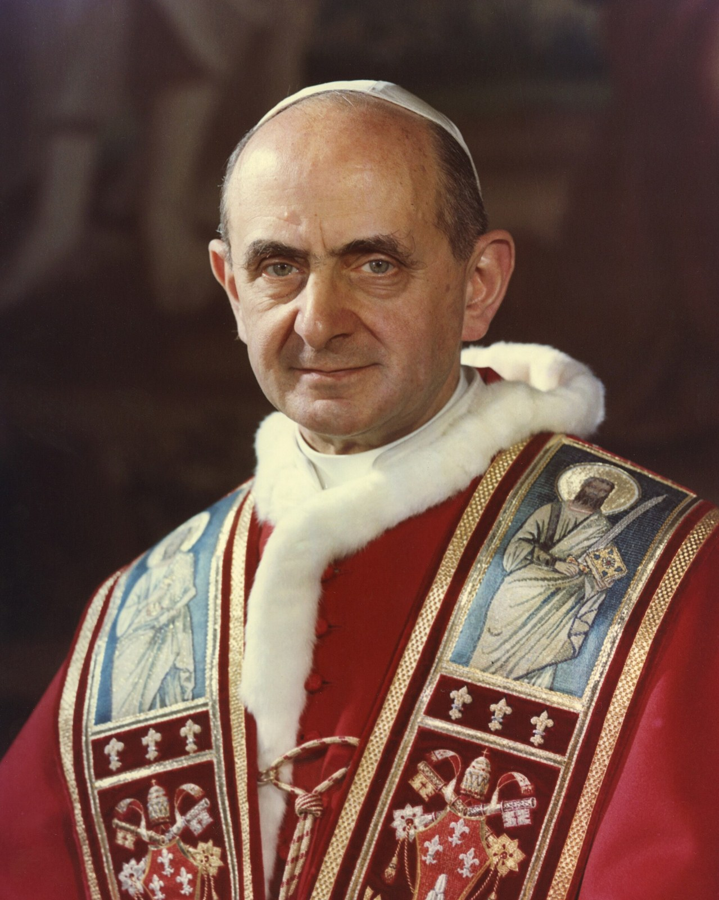
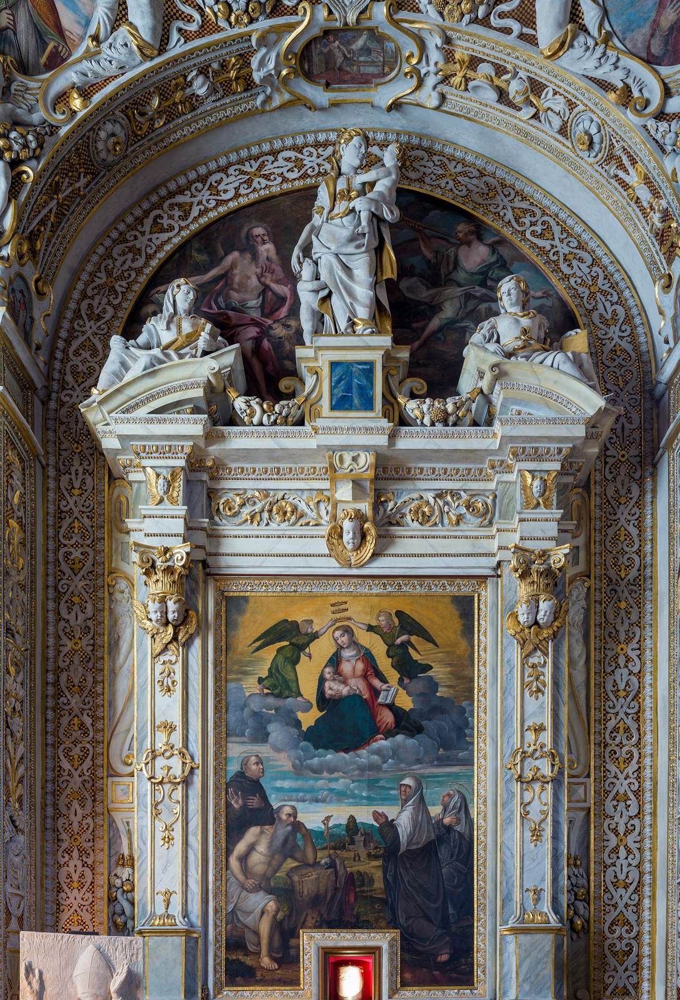
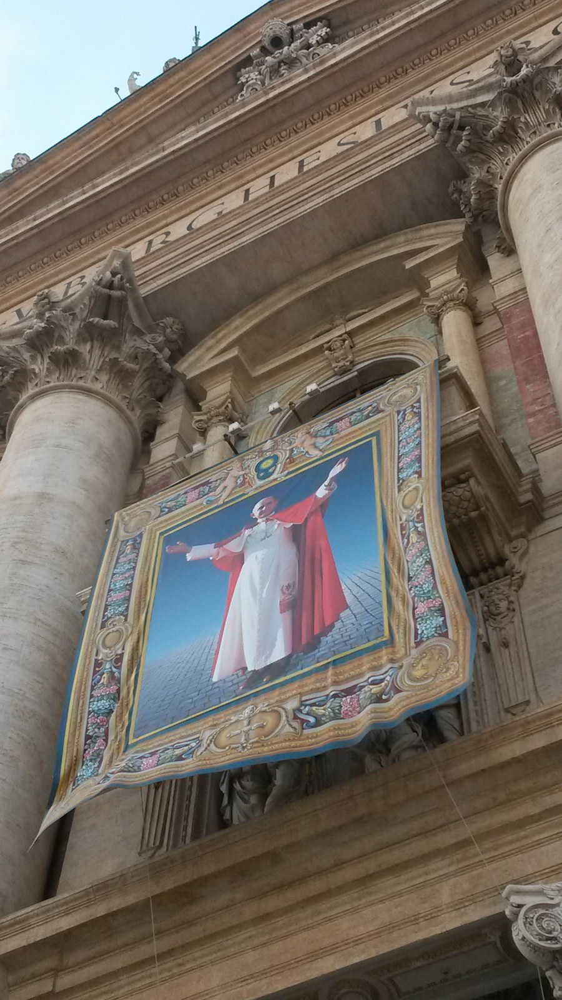
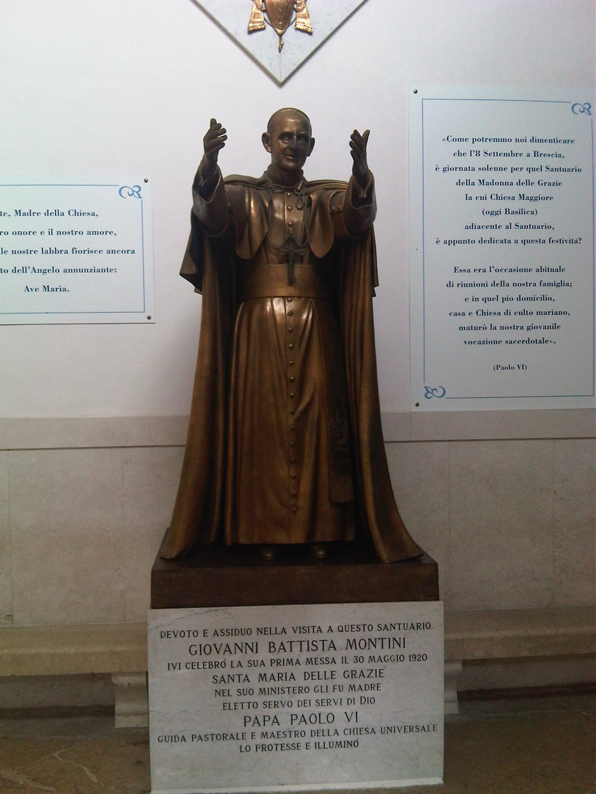
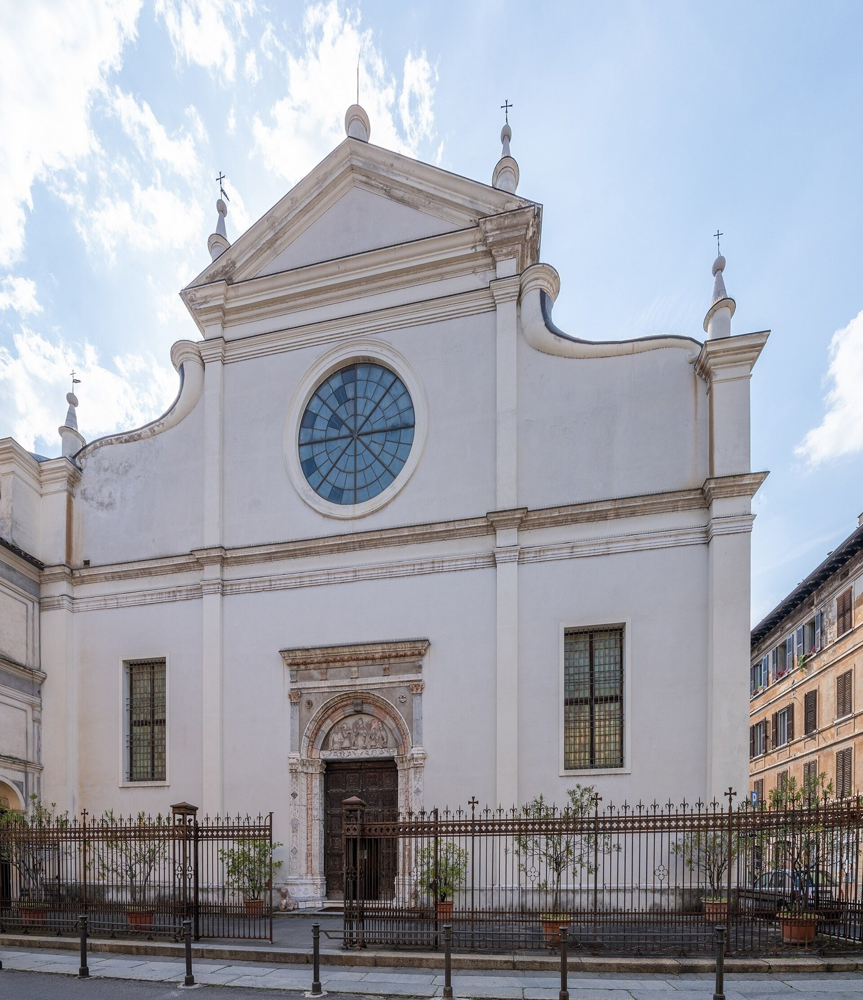

Fotografia Felici · Wikimedia Commons · Public domainAmanda, 865 gramas: o milagre de Paulo VI
Reconhecido pela Santa Igreja CatólicaO RELATO
Giovanni Battista Montini nasceu em Concesio, na província de Brescia, em 26 de setembro de 1897. Foi ordenado sacerdote em 29 de maio de 1920 pelo bispo de Brescia, Giacinto Gaggia. Na manhã seguinte, 30 de maio, celebrou sua primeira Missa diante da imagem de Nossa Senhora das Graças, no santuário bresciano. Eleito papa em 21 de junho de 1963, com o nome de Paulo VI, concluiu o Concílio Vaticano II. Morreu em Castel Gandolfo em 6 de agosto de 1978. Foi beatificado pelo Papa Francisco em outubro de 2014, na Praça São Pedro.
Naquele mesmo ano, Vanna Pironato, enfermeira no hospital de Legnago, no Vêneto, esperava o segundo filho. Ela e o marido, Alberto, já eram pais de Riccardo. Um exame pré-natal provocou o rompimento das membranas e a perda do líquido amniótico, que os médicos consideraram insuficiente para a gestação seguir. Em 23 de setembro de 2014, ouviu dos médicos que o aborto era inevitável e que não havia esperança.
Por sugestão de uma amiga, Vanna pediu a intercessão de Paulo VI. Em 29 de outubro de 2014, o casal foi a Brescia e rezou no Santuário de Santa Maria delle Grazie, o lugar da primeira Missa de Montini. A gravidez continuou. Amanda Maria Paola nasceu na noite de Natal de 2014, no hospital de Verona, pouco depois de completar 26 semanas de gestação. Pesava 865 gramas e media 32 centímetros. Precisou de ventilação mecânica, depois respirou sozinha, e passou meses em incubadora. Recebeu alta em 11 de abril de 2015, sem malformações no esqueleto, no coração ou nos pulmões.
O caso foi estudado pela Congregação para as Causas dos Santos. A Consulta Médica, com sete médicos, concluiu por unanimidade que o prognóstico era desfavorável à vida, que a terapia tinha sido adequada, mas ineficaz, e que a evolução não era explicável cientificamente. Segundo o relato publicado pelo arcebispo Rino Fisichella, o médico legal descreveu o caso como um evento inexplicável, único e irrepetível. Em dezembro de 2017, a Diocese de Brescia anunciou o reconhecimento do milagre.
Em 6 de março de 2018, o Papa Francisco recebeu o cardeal Angelo Amato e autorizou a promulgação do decreto sobre o milagre atribuído à intercessão do Beato Paulo VI. Em 14 de outubro de 2018, na Praça São Pedro, Francisco o canonizou com outros seis beatos, entre eles Óscar Romero, arcebispo de San Salvador. Na homilia, disse que Paulo VI testemunhou de forma apaixonada a beleza e a alegria de seguir totalmente Jesus. O santuário de Brescia recebe hoje os peregrinos que vão rezar onde Montini celebrou a primeira Missa.
O QUE A SANTA IGREJA CATÓLICA DECIDIU
Decreto sobre o milagre autorizado pelo Papa Francisco em 6 de março de 2018, em audiência ao cardeal Angelo Amato, prefeito da Congregação para as Causas dos Santos, e divulgado pela Sala de Imprensa da Santa Sé em 7 de março. Canonização celebrada por Francisco em 14 de outubro de 2018, na Praça São Pedro, junto com Óscar Romero, Francesco Spinelli, Vincenzo Romano, Maria Katharina Kasper, Nazaria Ignazia de Santa Teresa de Jesus e Nunzio Sulprizio.
FOTOS













Imagens do Wikimedia Commons, em domínio público ou Creative Commons, com crédito ao autor.
COMO VISITAR
Santuário de Santa Maria delle Grazie
Brescia, Itália
FONTES
- Sala de Imprensa da Santa Sé — Promulgação de decretos da Congregação para as Causas dos Santos, 7 mar 2018
- Sala de Imprensa da Santa Sé — Canonização de sete beatos, 14 out 2018 (com a homilia de Francisco)
- Avvenire — Il miracolo: Amanda, la bimba che non poteva nascere, 19 jun 2018
- ANSA — Pope Paul VI set for sainthood, miracle identified, 21 dez 2017
VER O POST NO INSTAGRAMTODOS OS MILAGRES NO MAPA